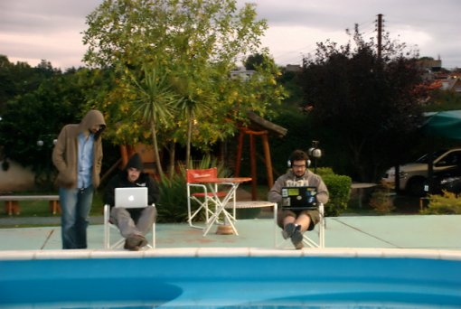
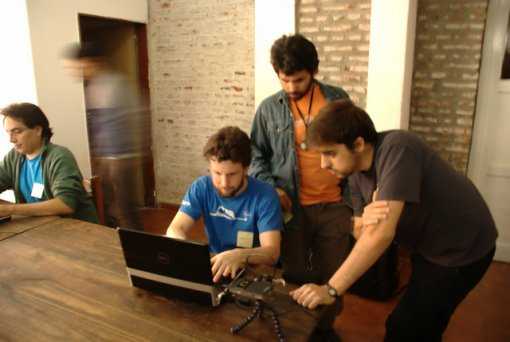
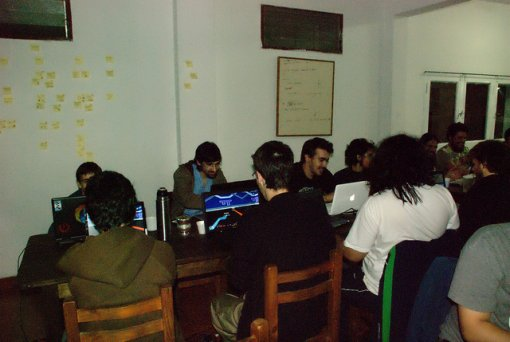

tin_nqn
>>> me.geek.post()
Revista Orsai Nº 3 en Córdoba 2011-06-10 15:18:13
De nuevo soy distribuidor de la Orsai en la ciudad de Córdoba. Si estás interesado date una vuelta por esta página

Charla: MyHDL, de Python al silicio 2011-06-06 12:27:44
[Sigo publicando cosas con delay de meses]
El sábado 30 de mayo se realizó el PyDay Córdoba 2011 con la participación de más de 200 personas y casi 20 charlas en dos salas simultáneas. Un éxito rotundo organizado por Juan y un gran equipo de colaboradores/as . Felicitaciones.
Mi participación
Participé dando una charla sobre MyHDL, un paquete que convierte Python en un lenguaje para describir hardware (HDL).
- Las diapositivas se pueden ver acá
- Repo
Usé MyHDL para hacer pymips, una implementación de un procesador DLX completo como trabajo final de la asignatura Arquitectura de Computadoras. Pueden leer un poco más sobre el trabajo en el informe que presenté.
Me recibí (el mes pasado) 2011-06-03 23:32:50
Oh, cuantos planes elucubrados para cuando ya no tuviera un exámen cercano para obstaculizar la felicidad. Y resulta que ahora, que ya no tengo, tampoco encuentro el tiempo de empezar a darle forma de realidad a esos planes.
Esta es la información: el 12 de mayo pasado me recibí de Ingeniero en Computación.
Pep 20: El Zen del Barça 2011-04-27 16:22:47
 El Zen de Python es
también el Zen del Barça, el de Pep Guardiola. La "Pep" 20
[1]:
El Zen de Python es
también el Zen del Barça, el de Pep Guardiola. La "Pep" 20
[1]:
Bello es mejor que feo. Explícito es mejor que implícito. Simple es mejor que complejo. Complejo es mejor que complicado. Plano es mejor que anidado. Disperso es mejor que denso. La legibilidad cuenta. Los casos especiales no son tan especiales como para quebrantar las reglas. Aunque lo práctico gana a la pureza. Los errores nunca deberían dejarse pasar silenciosamente. A menos que hayan sido silenciados explícitamente. Frente a la ambigüedad, rechaza la tentación de adivinar. Debería haber una —y preferiblemente sólo una— manera obvia de hacerlo. Aunque esa manera puede no ser obvia al principio a menos que usted sea Messi, Xavi o Iniesta. Ahora es mejor que nunca. Aunque nunca es a menudo mejor que ya mismo. Si la implementación es difícil de explicar, es una mala idea. Si la implementación es fácil de explicar, puede que sea una buena idea. Los espacios son una gran idea ¡Hagamos más de esas cosas!
Compartiendo documentación de paquetes Python 2011-04-10 19:16:38
Sabido es, aunque muchas veces se ignora, que un software sin documentación está incompleto [1].
Si bien el manifiesto ágil proclama "Software funcionando sobre documentación extensiva", yo subrayaría extensiva como eufemismo de documentación burocrática e inútil (opiné de esto acá) que evidentemente no es la que hace falta. Pero la documentación (sobre todo la buena) es indispensable y para algunos, la parte que más los enorgullece del proyecto (y con razón).
Desde el punto de vista técnico, escribir documentación (no sólo para Python!) es bastante fácil con restructuredText (qué feo el sitio de docutils, che!) que es el markup estándar de los pythonistas.
Sobre este markup funciona Sphinx, el generador de documentación más utilizado (por lejos) en el ecosistema de Python. Es lo que usa la documentación de Python misma, la de Django y casi todo proyecto conocido o por conocer.
Entonces usamos restructuredText, usamos Sphinx, pero para nuestro proyectito de morondanga que no tiene web propia ni nada, ¿dónde subimos la documentación generada? Veamos.
Usando Readthedocs.org
Read the docs es un sitio para hospedar documentación realizada con Sphinx. Sólo se necesita indicarle el repositorio público del proyecto (svn, git, mercurial, bazaar), subir los fuentes .rst y contenido estático (imágenes) aptos para Sphinx en una carpeta /doc o /docs y el sitio se encarga de bajar los fuentes de documentación y renderizarlos a HTML a través de Sphinx.
Estrictamente, usando rtfd.org (como le dicen los amigos) ni siquiera hace falta tener Sphinx instalado localmente.
Más aun, por defecto actualiza diariamente, pero se puede utilizar un "hook" para indicarle que actulice cuando "pusheamos" (o "commiteamos") al repo, de manera de tener la documentación actualizada al instante. Para usuarios de GitHub la activación del "web hook" se explica acá . Para BitBucket.org es parecido:
- Vas a tu proyecto , click en Admin -> Services
- Agregás el servicio "POST"
- Completás el campo de texto con la URL que te da ReadTheDocs en la página de descripción de tu proyecto (estándo logueado). Por ejemplo:

Y listo. Tu docu al instante.
Como el sitio genera el html en vez de servir una versión generada previamente, la documentación que requiere introspección del código ( todas las directivas `` .. auto* :: `` de Sphinx) este debe poder ejecutarse. Para eso el paquete debe ser instalable via setup.py y hay marcar desde la página de configuración del proyecto en RTFD.org, que instale en un virtualenv.
Para ver si hubo algún problema en la generación, podés fijarte en "build" donde te muestra el stdout y el stderr de la corrida de Sphinx.
Subir la docu a PyPi
Una forma buenísima de compartir tu trabajo pythónico es a través del Python Package Index, pypi, que es el índice que usan las herramientas pip e easy_install. Si bien no necesarimente los paquetes deben estar hospedados allí (indicando en el setup.py la URL de descarga) es muy común y fácil hacerlo con el comando upload del setup.py.
Lo que muchos no saben es que PyPi también ofrece hostear la documentación. La forma canónica es ir a la página de administración de tu proyecto en PyPi y adjuntar un .zip con la documentación (que no necesariamente tiene que ser hecha con Sphinx)

Pero si usamos Sphinx hay una manera más fácil, manteniendosé en el "ecosistema" de desarrollo: usar esta extension de setuptools que permite generar el html a través Sphinx y subirlo automáticamente. Se instala, obviamente, vía pypi:
$ easy_install sphinx-pypi-upload
Hay que condigurar un setup.cfg (ubicado al nivel raiz, junto con setup.py) indicandole dónde está la docu fuente y dónde el resultado. Más o menos así:
[build_sphinx] source-dir = doc/source build-dir = doc/build all_files = 1 [upload_sphinx] upload-dir = doc/build/html
Luego se usa:
$ python setup.py build_sphinx $ python setup.py upload_sphinx
Y docu subida a la dire `http://packages.python.org/tu-proyecto <http://packages.python.org/tu-proyecto>`_ . ¡Charaaán!
Usando tu repositorio SVN
Si usas SVN y tu servidor lo permite, podés servir contenido estático (html y todo lo que produce y necesita Sphinx) directamente desde el repositorio.
Para que el servidor Subversion muestre el html renderizado en vez del código (como texto plano) hay que indicarle el tipo mime de cada archivo.
$ svn propset svn:mime-type 'text/html' FILENAME $ svn propset svn:mime-type 'image/jpeg' FILENAME
Para que esto se haga automático, se puede modificar el archivo de configuración ``~/.subversion/config ``
[miscellany] enable-auto-props = yes [auto-props] *.html = svn:mime-type=text/html *.css = svn:mime-type=text/css *.js = svn:mime-type=text/javascript *.png = svn:mime-type=image/png *.jpg = svn:mime-type=image/jpeg *.gif = svn:mime-type=image/gif
Un ejemplo de esto es el reporte de mi proyecto integrador que está hospedado en Google Code
Aprovechándote de GitHub
GitHub hospeda páginas estáticas, tanto del desarrollador/a como de tus proyectos. Bien sirve eso para subir la documentación y eso hacen mas o menos automáticamente estas opciones que no he probado pero las dejo como referencia:
 Hosting sphinx doc in
github
de Luca Sbardella.
Usando
github-tools.
Hosting sphinx doc in
github
de Luca Sbardella.
Usando
github-tools.
La sanguijuela de cuevana 2011-04-09 14:22:27
UPDATE Hay una nueva versión con interfaz gráfica acá
Parece que se me hizo hobby chupar links de cuevana.tv y el experimento ahora tiene su versión pythonica: Cuevanalinks .
Es un pequeño proyecto que permite "conseguir links" de contenidos ofrecidos en cuevana, sirviendo estos como fuentes a manejadores de descargas como Tucan o JDownloader.
Más allá de los resultados, me ha tenido entretenido algunas horas y me permitió aprender (o al menos resolver) algunas cosas: cómo se usa mercurial (y en particular un merge conflictivo con Meld), cómo se escribe un setup.py, como se distribuye via PyPi, etc.
También, por supuesto, me permitió usar dos utilidades que me gustan mucho: PyQuery y plac.
La aplicación tiene dos módulos/componentes:
- Una biblioteca que intenta funcionar como API de Cuevana y es la encargada de scrappear la web en busca de la info interesante.
- Una interfaz de línea de comandos que permite buscar links y bajar subtitulos de contenidos específicos

Para qué sirve
Por ejemplo, para bajar la temporada 4 completa de Mad Men, con subtitulos, se podría hacer esto:
$ cuevanalinks 'mad men' s04 -s > madmen.txt && tucan -d -i madmen.txt
Instalación
Para instalarlo, basta con usar pip
$ sudo pip install cuevanalinks
O con easy_install:
$ sudo easy_install cuevanalinks
O bien, bajar el paquete y ejecutar :
$ tar xvfz CuevanaLinks-0.1.tar.gz $ cd CuevanaLinks-0.1 $ sudo python setup.py install
Algunas posibilidades de la API
El CLI por ahora sólo expone una parte pequeña de la API, pero hay varias posibilidades. Por ejemplo:
>>> from cuevanalinks import cuevanaapi
>>> api = cuevanaapi.CuevanaAPI ()
>>> house = api.get_show ('house')
>>> house.plot
u'El doctor Gregory House, especialista en el tratamiento de enfermedades infecciosas, trabaja en un hospital universitario de Princetown, donde dirige una unidad especial encargada de pacientes afectados por dolencias extrañas y en la que colabora con un selecto grupo de aventajados ayudantes.'
>>> house7x1 = house.get_episode (7, 1)
>>> house7x1.title
'Now What?'
>>> house7x1.cast
['Hugh Laurie',
'Lisa Edelstein',
'Omar Epps',
'Jesse Spencer',
'Jennifer Morrison',
'Robert Sean Leonard',
'Olivia Wilde',
'Peter Jacobson']
>>> house7x1.sources
['http://www.megaupload.com/?d=DM58TA0J',
'http://www.filesonic.com/file/36841721/?',
'http://bitshare.com/?f=67z435xm',
'http://www.filefactory.com/file/caf85b9']
>>> house7x1.subs
{'ES': 'http://www.cuevana.tv/download_sub?file=s/sub/7888_ES.srt'}
Lo que falta
Si bien es lo más prolijito que he hecho, todavía está lejos de ser un trabajo completo, tanto en funcionalidades como en SQA
Un aspecto esencial es hacer test (perdón Nati Bidart ;-) ), para lo cual tengo que aprender a usar nose y minimock.
Respecto a funciones, algo importante es definir cómo resuelve el CLI el manejo de múltiples resultados para una búsqueda. Actualmente devuelve el resultado "más relevante" sin anoticiar al usuario de otras opciones.
También falta documentación! Veremos la próxima.
Comentarios, sugerencias, bugs
Todo aporte (ideas, código, etc.) es bienvenido. Si encuentran problemas, reportenlos.
No estoy seguro cuánto puede durar esto funcionando, ya que depende de que el funcionamiento del sitio no cambie o yo tenga mucho tiempo y ganas de andar parchando detrás. Por eso, si hay más interesados y usuarios, seguramente podremos hacerlo durar más.
Veinteañero 2011-04-08 08:47:13
Suse 7.0 fue la primera distro Linux que mi gloriosa Pentium II cobijó. Al tiempo usé Mandrake, después Debian y desde su primera versión (2004) Ubuntu.
Un largo camino de aprendizaje... que alguna vez recorreré ;-)
La academia, las prácticas ágiles y el UML 2011-04-06 06:21:23
La manera más fácil para aprobar una tesis de ingeniería es mentir. Llenar páginas y páginas, preferentemente con tablas y viñetas, de contenidos vacuos y tediosos que seguramente nadie, mucho menos los evaluadores, leerán. Sólo hay que prestar atención a que sean muchas páginas y lo más simétricas posibles.
El ejemplo paradigmático de esto son las especificaciones formales de casos de uso, pasión de burócratas que tienen cabida donde no hace falta demostrar mucho.
Pero también el UML, me atrevo a decir, en su mayor parte y nivel de detalle es secuaz de esta ignominia que pauperiza el nivel del software académico: en vez de saber programar y poder leer código, se presta atención a los dibujitos, poniendo el grito en el cielo si la flechita es negra en vez de blanca, como dice Sommerville que debe ser.
Como no me gusta mentir, la facilidad no me seduce de más (tampoco la dificultad) y estoy bastante conforme con lo que hice me animé a ser sensato en expresar cómo hice mi trabajo.
No me encerré 6 meses a hacer dibujitos que resultarían perfectos, inescrutables y luego harían la programación trivial. Eso, al menos en mi experiencia, no existe (sospecho que ellos todos lo saben, lo que exacerba la hipocresía). Sí, en cambio, hice algunos dibujitos que me ayudaran a entender (y dar a entender) cómo iba la cosa, mientras iba programando y evaluando si estaba bien encaminado.
Este espíritu es el que cobijan las prácticas ágiles, que es el marco conceptual (metodológico) que adopté.
La cuestión es que, para ganarle al unknow how de los hombres de corbata, hay que justificar con nombres que les suenen admirables. Hay que mencionar mucho IBM, Microsoft, C#, Intel. Esas son las voces que respetan, aunque sean pura falacia

Yo justifiqué así:
Según afirma Terry Quatrani, evangelizadora de las metodologías ágiles de IBM, en The Truth About Agile Modeling :
Aunque sigas un proceso ágil, estarás realizando cierto grado de modelado – sólo que no lo realizarás tanto como si utilizaras un proceso tradicional. La falta de formalidad en el modelado ágil no significa que no estás modelando, sino que te pones el foco en los beneficios de este sin las desventajas y confusiones de documentos extraños y burocráticos.Por su parte, Robert Martin sostiene en *Agile Principles, Patterns, and Practices in C#* que el modelado basado en UML en el desarrollo ágil es útil como instrumento de comunicación, pero su detalle no aporta valor significativo:
No gastes mucho tiempo en esta tarea, no necesitas tanto detalle. Los modelos y los planos son necesarios en la arquitectura y la construcción civil porque es caro construir una casa para demostrar que su diseño funciona. El software no es así – puedes validar tu idea con sólo codificarla, en igual tiempo que el que insume hacer un modelo UML que nada prueba por sí mismo.Aun más escéptico, Alans Stevens, reconocido ingeniero en software [1] y conferencista, opina en un artículo:
No uso UML y noto que ninguno de mis colegas lo usa. Tengo sensaciones mezcladas acerca de su necesidad. Parece perfectamente razonable que debamos acordar como industria un conjunto de símbolos comunes para representar la programación orientada a objetos, pero UML tiene la típica apariencia de "diseñado por un comité".
(...) El aspecto más crítico en un diseño inicial, en mi experiencia, es la interfaz entre la UI y el modelo de objetos. Lamentablemente UML no aborda este problema y en cambio parece obsesionado por las minucias en una parodia de distracción académica.
Apuntes del PyCamp 2011 2011-03-30 19:50:40
Casi se hizo jueves y todavía no escribí nada sobre el PyCamp. Roberto Alsina se va a enojar.
La excusa, vaga como yo, es que la devolución de uno de mis directores de tesis fue más [STRIKEOUT:hinchapelotas] minuciosa que lo esperado. Así que para cumplir el objetivo tuve un amansador refactoring de 5pm a 6am cuyo resultado me permitió conseguir un lacónico:
Recibido, pero recién lo puedo ver el viernes
Inmediatamente demostré que el lenguaje soez en arameo es un conocimiento latente.
A modo de intro
El PyCamp es un encuentro de la comunidad Python Argentina. Monos (y pronto monas) con laptops afiladas se juntan en el algun rincón del país con internet, preferentemente lejos de las grandes urbes (para darle énfasis a eso de camp) a programar software libre, hackear de lo lindo, jugar jueguitos electrónicos y de los otros, tomar y beber en bucle continuo y hacer cuanto le plazca a cada uno, en un ambiente totalmente inclusivo, distendido y buena onda.
 Python Argentina abarca el amplio espectro que va desde programadores reconocidos internacionalmente (gran parte de ese Ubuntu que seguro estas usando — o deberías — lo hacen pythonistas argentinos) hasta "newbies" que se anotaron en la lista con el único y nada despreciable objetivo de callar al amigo que ya sabe un poco más y no para de hincharle para que use Python (resulta que a los pocos dias, el (ex)newbie ya está molestando a un tercero).
Esa población tiene fiel reflejo en el PyCamp, pero grosos y finitos tienen las mismas posibilidades de proponer, opinar y divertirse. Por supuesto, es impagable lo que se aprende y son increíbles las cosas que hacen los geeks cuando están divertidos.
De estos encuentro salieron proyectos como Cocos2d, la CDPedia y lalita.
Mi experiencia
El PyCamp 2011, el cuarto consecutivo, se realizó en La Falda y fue el primero en el que participo. Sabía, por referencias, fotos y repositorios, de qué se trataba, pero como dice el adagio... del dicho al hecho ....
 Nati tenía un congreso de germanística en Buenos Aires y después se iba a La Plata a visitar a una amiga, así que las opciones eran ir a la marcha el jueves (24 de marzo) y cuevanear el resto del finde o sumarme a la movida. Perrito ofreció movilidad así que lo tuve servido.
Salimos el jueves a la mañana y con nosotros venía Malev y el organizador del evento, de pie señores, Nueces.
A lo largo de los 4 días de PyCamp, participé en la CDpedia (mejoré la funcionalidad de "artículo al azar" y estuve haciendo unos benchmarks de optimización en el peso de las imágenes), amagué con un filtro para Pep8fy que dejé medio inconcluso, comí al menos el doble de lo que venía comiendo (bien la comida, che!), jugué mi primer sesión de rol guiado por el señor ordenador (Alecu, un maestro!), malabareé con las bolas (las de malabares) de Humitos, presencié en vivo la gestación de un delirio mágico de Roberto Alsina, me metí a la pileta y tomé sombra, perdí 0-5 0-5 los dos partidos de metegol y me cagué de risa igual con mi coequiper (¡fiesta!), escribí "puto" (con onda, Lipe) desde un android con un librería para multitouching que estos bestias hicieron en una tarde, quedé pasmado con el vuelo de la discusión sobre los motivos (y posibles acciones correctoras) de la baja participación femenina en Python y el Software Libre en general, bebí vino, fernet, cerveza y mistela (me colé en un contingente más adelantado que el nuestro en la excursión del Hotel Edén, y después me volví con Flecox a ver el partido de Argentina), jugué con Tato (el pythonista más peque del encuentro, hijo de Roberto Alsina) y me enternecí viendo a otros geeks (Huguito — Pilas rulez! —, John, Achuni, todos) jugar como niños.
 Detalles faltan pero estos someros recuerdos sobran para afirmar que el balance es positivísimo.
Una reflexión final
PyCamp contrasta totalmente con los grises, aburridos y mediocres congresos académicos que en el ámbito universitario se difunden y en los que alguna vez he participado, donde los papelitos cuentan y donde (casi) todo se vuelve una ficción impulsada por la inercia y la necesidad de "publicar" (no importa mucho que), para mantener la beca, el statu quo y el viático.
En PyCamp no se piden papeles ni se aplauden corbatas, la gente se llama por el sobrenombre y no por el título, se admira el conocimiento pero más se festeja su colectivización, y eso lo saben (y lo disfrutan) los picantes y los tiernitos.
Cuanta falta le hace a la universidad visiones y experiencias como esta.
El Quijote del Software Libre 2011-03-21 09:04:48
Durante los ultimos años de facultad me he ganado ciertos apodos, algunos más buena leche que otros, relacionados con mi postura y militancia respecto al Software Libre.
Esta postura se mezcla (se complementa) con otras posiciones políticas que he manifestado y defendido reiteradamente con profesores y compañeros, que son intrínsecas a la formación y el perfil de ingenier@s que se forma en la universidad pública, con la que suelo disentir. Muchas de esas discusiones, están publicadas en mi otro blog
La semana pasada una amiga comentó un mensaje que dejé en Facebook avisando que había terminado la tésis.

Inspirado en ese comentario de Lu, Nati (mi novia) me pintó esta remera como regalo de cumpleaños (que es mañana).

Claro que yo no salgo muy favorecido (cansancio y flash no hacen buen equipo). Pero la remera está buenísima. Acá el detalle:

En la espalda podría ir esta cita :
"La libertad, Sancho, es uno de los más preciosos dones que a los hombres dieron los cielos; con ella no pueden igualarse los tesoros que encierra la tierra ni el mar encubre; por la libertad, así como por la honra, se puede y debe aventurar la vida, y, por el contrario, el cautiverio es el mayor mal que puede venir a los hombres."
Don Quijote, capítulo LVIII, segunda parte
Contents © 2012 Martín Gaitán